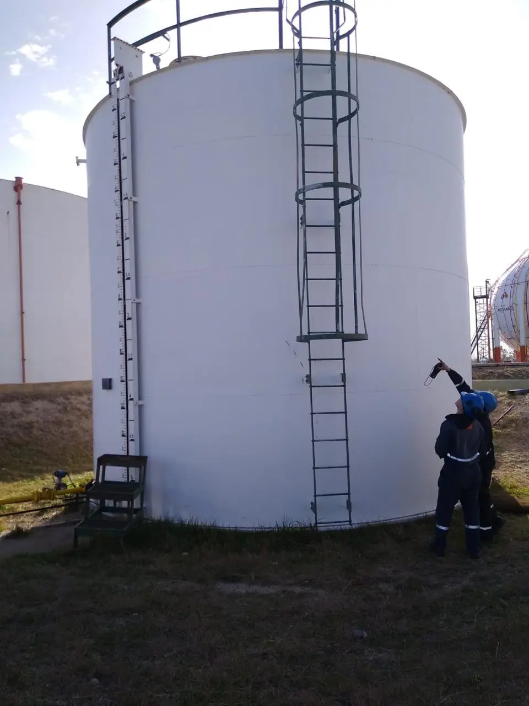
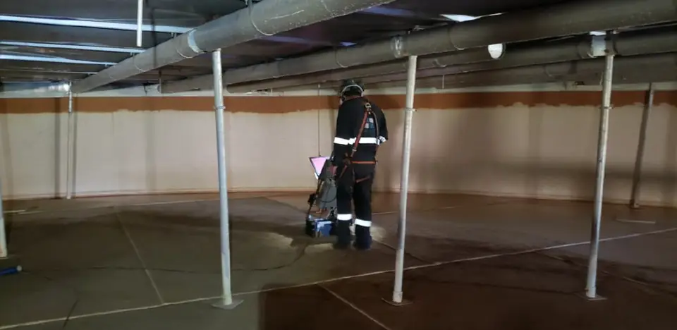
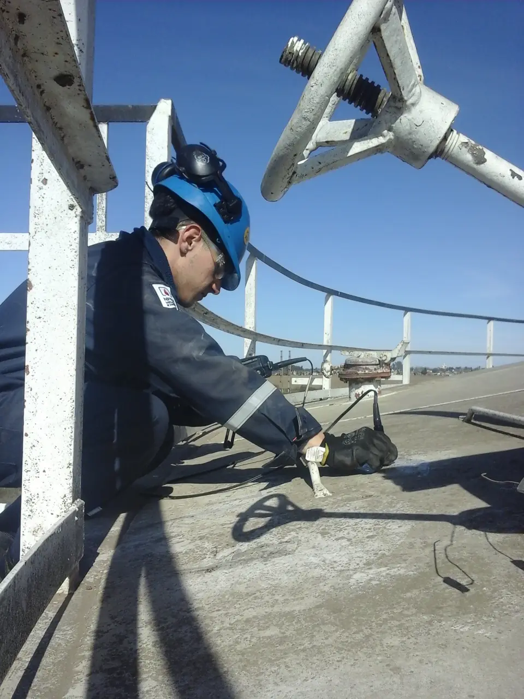

Inspecciones técnicas
Inspección de tanques aéreos de almacenamiento de hidrocarburos
Integridad de tanques aéreos de almacenamiento de hidrocarburos según Res. 277/25 SE y Norma API 653.
- Verificación de condición técnica según Res. 277/25 SE y Norma API 653
- Ensayos mínimos y ensayos complementarios según criticidad
- Personal con certificación API 653 y Nivelación IRAM-ISO 9712
Alcance
Verificación de condición técnica según normativa
- Res. 277/25 SE
- API 653
Aplicamos distintos ensayos no destructivos para determinar el estado de los componentes del equipo. Las inspecciones las realiza personal con certificación API 653 y Nivelación IRAM-ISO 9712.

Detalle del servicio
¿Cómo inspeccionamos un tanque?
Ensayos mínimos aplicables

Evaluación del piso mediante LFET/MFL

Medición de espesores por Ultrasonido
Inspección por Crawler Magnético
Inspección visual interna y externa
Ensayos complementarios según criticidad

Preguntas frecuentes
Lo que suelen consultarnos
¿Qué normativa se aplica?
La Res. 277/25 de la Secretaría de Energía y la Norma API 653.
¿Cada cuánto hay que inspeccionar un tanque?
[A completar]
¿Es necesario sacar el tanque de servicio para inspeccionarlo?
[A completar]
¿Qué documentación se entrega al finalizar?
[A completar]